Тальцинский 2008
- 1-3 мая 2008 -
Праздничек, 1 мая. Снег белый и свежий.
Красота! Дяденька-сторож на турбазе недоумевает - "Вас что всех
сегодня прорвало-то!?" Дядя еще не видел, что на первомай на Белом
Иркуте бывает :) А тут всего-то максимум с десяток машин... В их числе
"паджерик" слюдянских сноурайдеров - из скромного прибайкальского
городка приехали дядя Володя, Саня Сизов и я. Собрались и двинули. Тропа
была подготовлена вчерашними первопроходцами в лучшем виде, да и перед
нами кто-то притоптал снежок. Так что дотащились нормально - за 5 часов.
Снегоступы мне и в этом году не пригодились. От "бабы" тропили
через поле как ежики - в тумане. А подъем после поля - как лошадки,
в тумане и в мыле :) В верхнем лагере уже несколько палаток было, но
людей сначало не было видно. Потом Гил вылез из палатки в каматозном
состоянии и сказал, что все ушли на фронт, т.е. на верх, покататься.
Ну и правильно. Мы вот тоже сейсас палаток наставим и кататься пойдем.
И пофиг, что туман. В прошлом году точно так-же было.
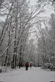
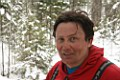
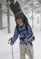
Снежная аллея, дядя Володя и Саша Сизов
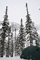
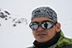
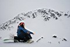
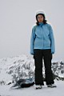
Палатка, Костя Шишкин, Аня и Оля
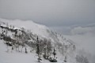
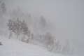
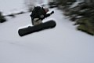
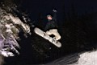
Облака, туманы, горы и летающий Саша
Наверху тумана в общем-то и не было, он внизу плавал.
А над нами плавала облачность и создавала эффект рассеянного света -
сплошное молоко и совсем не читаемый рельеф. Если долго кататься в таких
условиях, то можно стать гуру, то есть кататься с закрытыми или завязанными
глазами. Так что туман - это тоже плюс и "афигенный пазитиф"
:) Настоящим сноурайдерам завсегда везде ништяк :) А уж тем более, когда
есть лопата! Ведь лопата - это очень креативный инструмент, с ее помощью
можно очень быстро "нарыть кочку" нужной формы. Конечно, можно
это сделать и сноубордом, но лопатой - это же совсем другое удовольствие!
Так что, под руководством Саши, нужную форму трамплина сделали какую
нужно. И даже до темноты успели попрыгать. И даже по темноте тоже :)
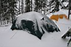
2
мая, и снова праздничек, потому как снова свежий снег! Ночью,
при скатывании снега по тенту палатки, несколько раз просыпался с немым
криком "Лавина!". Вот блин дожил, а! Пора, пора на летние
каникулы :) Я и так в этот раз решил не маньячить, даже специально ничего
не взял - ни каску, ни биперы, ни щупы, ни даже рюкзачек, чтобы никакого
соблазна не было в самые #опы лезть. Решил спокойно изучать искуство
владения доской и телом в воздухе. Тем более, что есть у кого поучиться
фронт-флипам, всяким там тристашесятам и прочим грэбам - Саша в этом
деле ш-PRO-т еще тот :)
 Но
соблазны совместить фристайл и фрирайд конечно же были, на Тальцинском
без этого никак! Поднялись вместе со всеми на гребень, там и попрыгали
с надува немного. Вроде бы и немного вниз лететь, а адреналина хватает,
да еще плюс удовольствие от мягкого и чистого заземления. Так что я
в эту фишку въехал :) А когда мы с гребня до Шаман-горы слетели на ура,
то Саня въехал уже во фрирайд :) Ну еще бы, по крутому и девственно
чистому склону на скорости пролететь, да еще и на Нидекер Мегалайте
:) я помню, когда Леха Пестов на такой же доске с Лесного слетел первый
раз - зело был радостен :) Так что я и Саня у Шаман-горы пожали друг
другу руки и решили, что All Mounting Fun Ride Forever! Пролетарии фрирайда
и фристайла - объединяйтесь и катайтесь!
Но
соблазны совместить фристайл и фрирайд конечно же были, на Тальцинском
без этого никак! Поднялись вместе со всеми на гребень, там и попрыгали
с надува немного. Вроде бы и немного вниз лететь, а адреналина хватает,
да еще плюс удовольствие от мягкого и чистого заземления. Так что я
в эту фишку въехал :) А когда мы с гребня до Шаман-горы слетели на ура,
то Саня въехал уже во фрирайд :) Ну еще бы, по крутому и девственно
чистому склону на скорости пролететь, да еще и на Нидекер Мегалайте
:) я помню, когда Леха Пестов на такой же доске с Лесного слетел первый
раз - зело был радостен :) Так что я и Саня у Шаман-горы пожали друг
другу руки и решили, что All Mounting Fun Ride Forever! Пролетарии фрирайда
и фристайла - объединяйтесь и катайтесь!
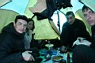
В
этот день парадом на Тальцинский командовал ангарчанин Сигл. Ангарчане
вообще на Тальцинском рулят, это же они тут первые начали кататься -
Мантуров, Жебраускас, Шер, Спартак и другие известные личности. Так
вот, я Сигалу уже говорил, что он молодежь "совращает", и
ладно бы только своими знаменитыми кулинарными изысками. Так ведь нет
- следом за этим опытным и уважаемым фрирайдером молодежь покоряет новые
и крутые склоны. Это наверное хорошо и весьма радует. Молодежь-то ведь
взрослая и никто ее насильно в гору не тащит, и с Хот-Дога и Мурены
не скидывает. Каждый сам решает, с кем и в какую #опу он полезет. Каждый
знает, что в большинстве случаев можно "зачОтно катануть"
и в редких случаях "конкретно попасть", и только в очень редких
можно попасть на небо... Это же все знают, так что я так, пальцем у
виска немного покручу, потому что сам такой же :)
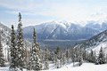
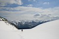
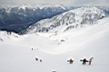
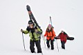
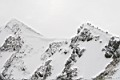
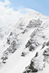
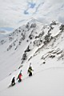
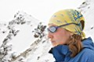
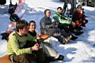
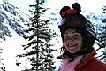
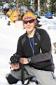
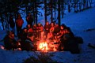
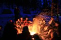
Так, о чем это я? А! Ну короче, мои слюдянские компаньоны
решили сегодня обратно двинуть, ну я их немного проводил с выкатом почти
до "бабы", потом на обратном пути с шелеховскими ребятами
зазнакомился и попрыгал с ними немного. Они свой лагерь из-за вчерашнего
тумана замутили в необычном месте, ну та и ладно, им снега там покататься
и на трамплины хватало :)
А в нашем лагере Лёха Дирежер немного переделал трамплин, да так, что
с трампа стало сильно вверх выбрасывать. Ну меня до позднего вечера
и выбрасывало :) В итоге теперь могу похвастаться стабильным 180 с гребом!
Не весть какой супер-пупер трюк, но это же только начало :)
Ну и есчо вечерком была традиционная посиделка у костра.
Хотя вчера тоже была посиделка у костра, но почему-то обычно на второй
вечер посиделка у костра становится наиболее массовой и душевной. Ну
и есчо Костю Шишкина с гитаркой "заказали", песни пели и вообще,
всякие спиртные напитки пили и всякие штуки в костре жарили.
3 мая, отличная солнечная погода с
самого утра. День возвращения, поэтому до обеда народ успевает по разу,
а кто и по два, где-нибудь катануть. Я пошел на Шаман-гору, нашел там
дроп и три раза прыгнул. Не, просто так вот взял и прыгнул. Причем не
с такого уж и большого дропа. Но эти прыжки напомнили мне первый спуск
с Хот-Дога. Перед тем как поехать, я сидел и реально борол свой страх,
целенаправленно успокаивался. Потому что при подъезде к этому дропу
и при полете с него столько адреналина выделяется в организме, что когда
короткие мгновения полета заканчиваются, то стук сердца слышно очень
хорошо, и коленки трясутся. А чтобы чисто заземлить, дрожь в коленках
совсем не нужна. И с учетом этого страха все равно хочется еще раз прыгнуть!
Короче, не знаю как вы, господа катающиеся с крутых кулуаров, но я себе
на следующий сезон адреналиновый источник уже четко определил - это
дропы и прыжки с них со всякими там грэбами, фронт-флипами и 360-оборотами.
Я, блин, всего 3 раза прыгнул и мне так вкатило, что просто капцы :)
Вон, Гил тоже следом за мной прыгнул с этого дропа для начинающих, он
тоже подтвердит, что "эта хрень вставляет не по детски" :)
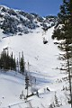
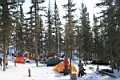
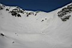
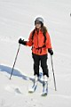
Ну вот и все, палаточный лагерь сворачивается в рюкзаки,
доски привязываются к рюкзакам, и все это хозяйство спускается с гор.
Хотя вообще-то половина населения доехала своим ходом, практически до
"бабы". Потом траверс проходили пешком, так как он почти весь
растаял, а вот от "танцплощадки" и до "равнины"
можно было еще поизвращаться на доске по лесу, снега хватало. Потом
долгая и нудная равнинная дорога. Мокрые ноги. Турбаза. Купание Кости
Шишкина в Снежной, остальные не рискнули :)
Доехал до Слюдянки на новой и большой машине Димы Новикова, за что ему
отдельное спасибо :)
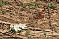
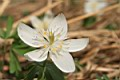
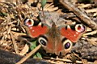
МАЙ 2008
Фото-отчет от Лёхи Слюдянского